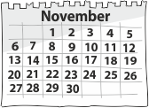
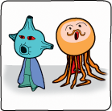
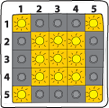
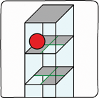
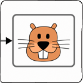
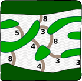
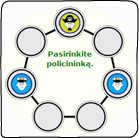
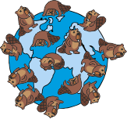
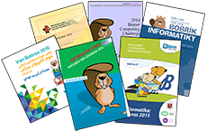

|
 | |||
What is Bebras
Bebras is an international initiative aiming to promote Informatics (Computer Science, or Computing) and computational thinking among school students at all ages. Participants are usually supervised by teachers who may integrate the Bebras challenge in their teaching activities. The challenge is performed at schools using computers or mobile devices. |
What does Computational Thinking involve?
Computational thinking involves using a set of problem-solving skills and techniques that software engineers use to write programs and apps. The Bebras challenge promotes problem solving skills and Informatics concepts including the ability to break down complex tasks into simpler components, algorithm design, pattern recognition, pattern generalisation and abstraction. More about computational thinking. |
Dates
The second week of November is declared as World-Wide BEBRAS week for solving tasks. Some countries extended it to two weeks. Many countries run all-year-round Bebras activities like participants awarding events, second round of the challenge, summer campus, teacher workshops, collecting statistics and writing research papers. |
|  |  |  |  |  |  |
Try it!
Everyone can do it. The Bebras challenges are made of a set of short problems called Bebras tasks and are delivered online. The tasks are fun, engaging and based on problems that computer scientists often meet and enjoy solving. The tasks can be solved without prior knowledge but instead require logical thinking. The aim is to solve as many as you can in the allotted time.
More information What is a Bebras task.
|  |  |  |
||
Participation
Check if your country is a member or an observer: list is here. Joining the Bebras initiative for a country consists mainly in two parts: organising the national challenge in the country and participating to the International Task Workshop. More information on Join us. |
Resources
Previous Bebras tasks you can find in many countries’ websites as the Bebras brochures. Some previous challenges are available to try without registering or logging in. It depends on language do you know. Examples: Finland, Sweden, UK.
|
Awards
We emphasise participation but also recognise top performing students. All countries provides different types of certificates available to students in each age group, for example, Certificate of Participation, Certification of Merit, Certificate of Distinction, and etc. |